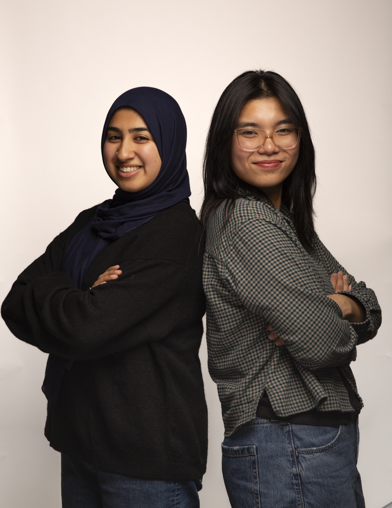
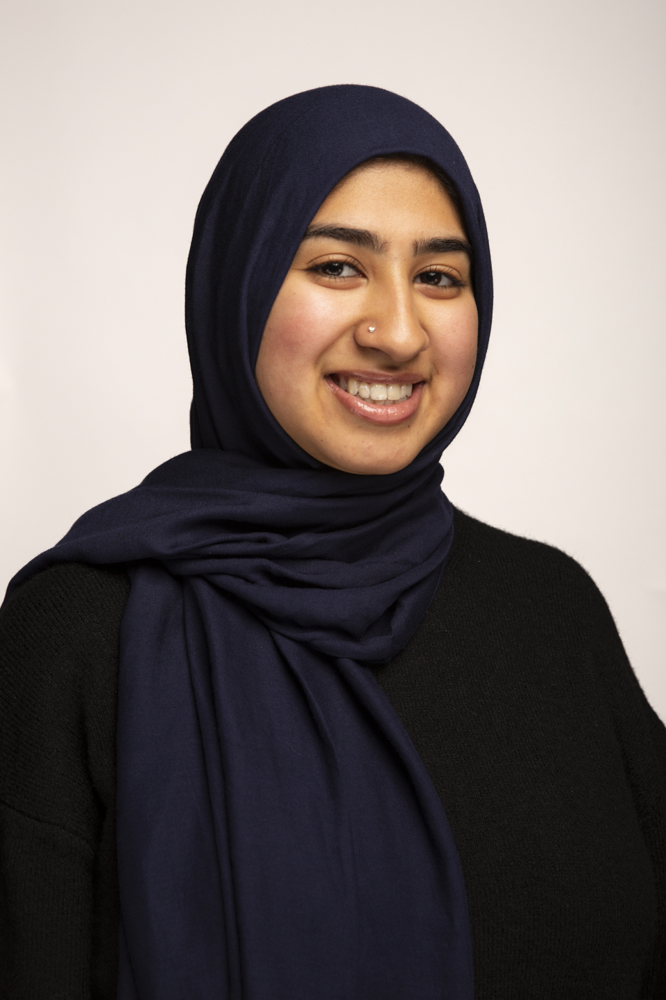
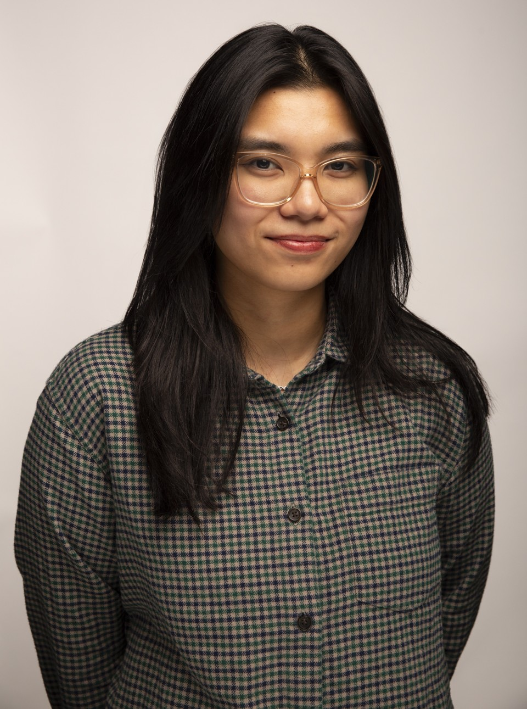
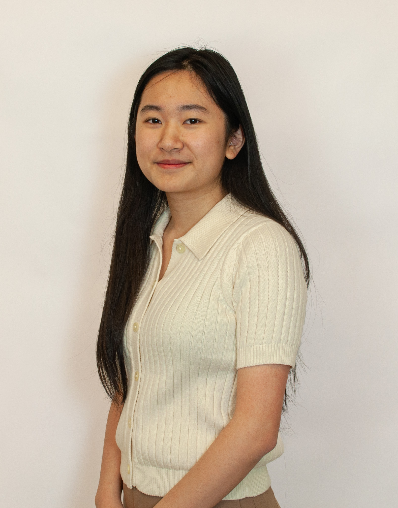
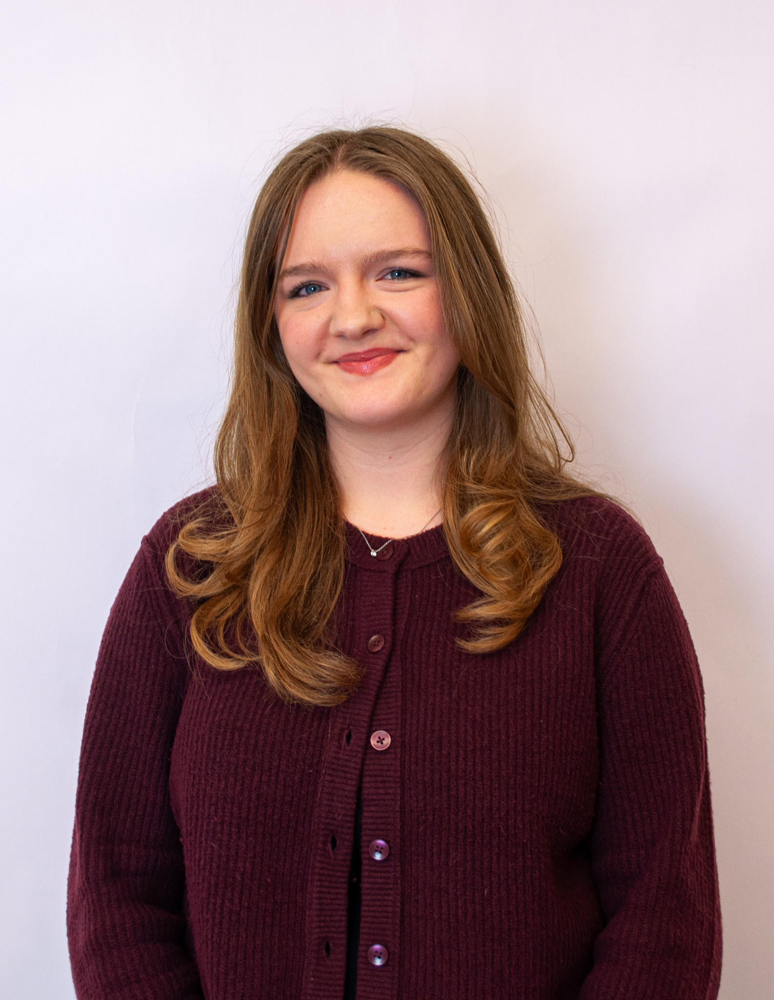
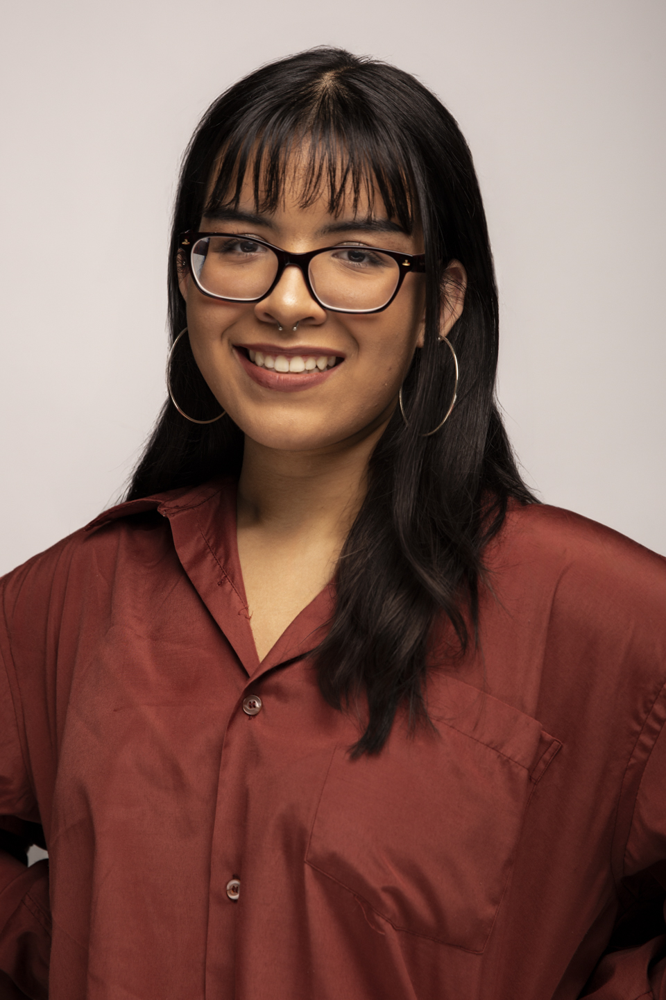
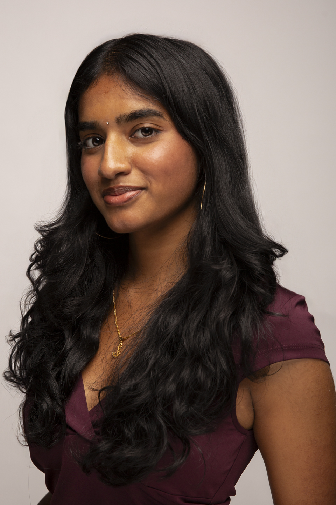

ABOUT US

TMUTAGA is the only Canadian student chapter of the Technical
Association of the Graphic Arts, representing The School of
Graphic Communications Management at The Creative School within
Toronto Metropolitan University (formerly Ryerson).
Entirely student-run with the guidance of a faculty advisor, we
produce a technical journal that is entered into the Helmut
Kipphan Cup student competition against other schools around the
world. The journal is created entirely by the efforts of our
students from the selection of papers, to design and layout, to
production, and more. Each year, we present our journal to
industry professionals at TAGA's Annual Technical Conference. In
2024, we are excited to expand our journey to include packaging
and t-shirt design.
Our Vision
To showcase the amazing work and research of Toronto Metropolitan
University’s Graphic Communications Management students across
various graphic arts industries.
Our Mission
To promote the work of Graphic Communications Management and The
Creative School students to a wider audience beyond the student body
of Toronto Metropolitan University.

ALIYAH
she/her
President
Hey there! My name is Aliyah and I am honoured to be this year's TMUTAGA President! I am a third year GCM student concentrating in Publishing and minoring in Disability Studies. I am proud to be a part of this incredible team, without any of whom this project would not be possible. As president, I am responsible for overseeing all aspects of TMUTAGA. I work closest with (the team/my Admin team) on financials, planning and organizing, and ensuring all aspects of our production are conference-ready and align with TMUTAGA's values.
EIMMIE
she/her
Vice-President
Hi hi! I'm Eimmie (a.k.a Eims) and I'm delighted to be TMUTAGA's Vice president this year! I'm currently a third year pursuing a minor in communication design and a publishing concentration. I'm so excited to be a part of TAGA and to showcase our proud work. Working side by side with our prez, it has been a joy overseeing our hardworking team to create everything from scratch. I can't wait for everyone to see our work!


YI JIA
she/her
Finance Director
Hiya! My name is Yi Jia, and I'm this year's Finance Director for TMUTAGA! I'm a fourth-year GCM student working toward a concentration in Packaging and a minor in Communication Design. It's been incredibly exciting to see everything our team has been working toward come to life, and I'm looking forward to what's to come next!
MATTHEW
he/she
Creative Director
My journey in TMUTAGA has certainly been a long and winding road, but satisfying for the view. This edition of TMUTAGA concludes my third and final year as a member of the student chapter, one full of rewarding mayhem. It has been an interesting experience watching the team reinvent itself in this new era. I would like to thank my associates for their assistance in bringing my vision to life, and for my fellow executives for never doubting me throughout this process. Much of my work this year could've only happened with your support.
ALYSSA
she/her
Production Director
Hello!! I'm Alyssa (she/her) and this is my second year on TMUTAGA. I'm honoured to be this year's Production Director and I have the privilege to being part of such an amazing team. I'm a fourth-year GCM student pursuing a concentration in publishing, who enjoys the intersectionality of design and anything book/production related. I'm so excited to showcase all the incredible work our team has put into producing this beautiful journal, and I hope you enjoy it as much as we enjoyed creating it!
NICOLE
she/her
Editorial Director
Hi! I'm Nicole, and I'm this year's Editorial Director for TMUTAGA! I'm a fourth-year GCM student pursuing a concentration in Graphic Output and a minor in Communication Design. I really enjoy getting to read and highlight the amazing research done by GCM students, and I'm excited for everyone to explore the work featured in this year's journal!


ALICIA
she/her
Multimedia Director
Hey there! I'm Alicia (ah-lee-see-ya) and I am the Multimedia director of TMUTAGA for 2025-26! It's my second year on the team, and I'm so glad to be working with such a talented bunch again. My team and I have been working hard to create complimentary aspects for the journal like this website, augmented reality, and ebook versions of the journal! As I face graduation, I'm so proud to have shown off the hard work of GCM grads one last time!
JEEVANA
she/her
Marketing Director
Heyo! I'm Jeevana, this year's Marketing & Events Director for TAGA! I'm a fourth-year GCM student completing a concentration in Packaging and a minor in Marketing. I'm so grateful to be working with amazing people and spreading the word to TMU about TAGA and all that we do!

KRZYSZTOF (KRIS) KRYSTOSIAK
he/him
Faculty Advisor
As Faculty Advisor for TMUTAGA, Kris brings years of industry experience and academic expertise to guide the student chapter. His dedication to supporting student research and professional development has been instrumental in helping TMUTAGA thrive. Kris works closely with the executive team to ensure the journal maintains its high standards while providing mentorship and connecting students with industry opportunities.
SCOTT
he/him
Faculty Advisor
Scott serves as a Faculty Advisor for TMUTAGA, offering invaluable guidance and support to the team throughout the journal production process. His commitment to fostering student excellence and innovation helps ensure that TMUTAGA continues to showcase the outstanding work of GCM students. Scott's expertise and encouragement inspire the team to push creative boundaries while maintaining professional standards.
ASSOCIATES
Production
Fiona Jao
Matthew Karton
Isabel Kalovsky
Gia Sharma
Duaa Shahzad
Andrew Whelan
Marketing
Natalie Annabelle
Rina Chong
Manrukh Quareshi
Sheilae Siagian
Multimedia
Haqeeqat Mangat
Saba El-Hayek
Creative
Lindsay Buckingham
Yi Jia Lin
Pegah Smiley
Mariah Williams
Sadiyah Khan
Editorial
Alexa Caruana
Nicole Downey
Aneeqa Faisal
Alyssa Varone-Ferreria